Using satellite images and computer vision to study the evolution and effects of spatial apartheid in South Africa
Student: Raesetje Sefala | Advisors: Richard Klein, Timnit Gebru and Nyalleng Moorosi
Introduction and Motivation
The availability of billions of high resolution satellite time lapse imagery gives us the potential to use computer vision to study our cities, and help governments come up with effective policies. While researchers like Blummenstock et al have used mobile phone data to predict poverty rates in Rwanda [1], and Jean et al used satellite imagery to do this in 4 African countries [2], the potential to do more complex analyses using imagery on the African continent has largely been unexplored.
The legacy of apartheid in South Africa continues to disrupt society today. Apartheid is the former policy of economic and political discrimination, and segregation against non-european groups in South Africa. One such example is that of spatial apartheid, where residential areas were segregated based on race. The remnants of such policies are still visible today and moving around residential areas shows many completely segregated neighbourhoods of townships next to gated wealthy neighbourhoods that have largely remained unaffected by the ending of apartheid.
For example, Figures 1 and 2 show some aerial images taken by photographer Johnny Miller, depicting completely segregated neighbourhoods of townships next to gated wealthy neighborhoods that have largely remained unaffected by the ending of apartheid [3]. Although this effect is immediately obvious to any human looking at these photos, people cannot quickly analyze millions of such images and gain insights.

Aim
Our research proposes the use of computer vision to analyse satellite images of South Africa from 2006 to 2016. This work aims to understand the relationship between the spatial and socioeconomic makeup of neighbourhoods in South Africa, and also studies how they have evolved over time in post Apartheid.
The specific questions we would like to answer are:
-
Can we use computer vision to understand the evolution of the built environment in three municipal areas: Ekurhuleni, City of Cape town and Msunduzi municipal areas post 2009?
-
Will the DeepLab3 trained on top of WideResNet38 [6] or the Unet [25] Semantic Segmentation model fine-tuned with our satellite image dataset be able to detect and classifying neighbourhoods?
Research Objectives:
-
Automatically identify and cluster neighbourhoods such as townships and wealthy neighbourhoods using various computer vision techniques with a special focus on semantic segmentation methods based in deep learning.
-
Measure the sizes of these neighbourhoods and shapes over time.
-
We will be able to detect neighbourhoods on satellite images automatically.
-
Use average household income from the meso-zone dataset on overlaid neighbourhood polygons as a proxy for neighbourhood type.
-
Predict the economic status of a neighbourhood using a classification model and expand on the economic dataset using the classifier.
Methodology
To accomplish this we will be using satellite images, geographically and semantically labelled coordinates of all the buildings in South Africa and socioeconomic data to build a semantic segmentation model that can predict a geographical neighbourhood class as township, suburb, informal settlement, etc. In addition to automatically detecting and classifying neighbourhoods, we plan to use demographic and socioeconomic data to analyze the change over time in the demographic makeup, economic status and access to basic resources such as the number of clinics and schools of these detected neighbourhoods.
The work
-
September 2018
Check in
-
October 2018
Research Proposal
_ Accepted
+Link: The Proposal
The Wits University's School of Computer Science and Applied Maths accepted the attached proposal.
Feedback: "I would like to hear more about how preprocessing and postprocessing of the satellite images will be done."
Feedback: "Can we identify policies that have been effective in desegregating communities- not easy to prove causality"
Feedback: "Does de-segregation lead to better economic outcomes for citizens- not easy to prove causality" -
December 2018
Black in AI and Women in Machine Learning
_Abstracts accepted, A talk @BAI- Neurips2018
+Link: Abstract
Talk slides link: Black in AI talk
Poster link: Presented poster Poster
Short abstract was accepted for this work in both WIML and BAI.
Feedback: The paper proposes the use of semantic segmentation models for segmenting neighborhoods in aerial images of cities. The paper could consider instance segmentation instead; instance segmentation may be more appropriate to segment and separate out individual neighborhoods from each other.
Feedback: It would be good if by the time of presentation this research could also include some preliminary technical work or a more sophisticated data analysis than what is currently presented in the paper.
Feedback: The reviewers look forward to seeing more results and analyzes as the work is completed.
Feedback: I would appreciate if the authors could take into account the specificities of South Africa in comparison to other countries. For future work, I recommend using additional data (such as census information) to: (1) gather additional insights on the people living at the detected communities; (2) helping to distinguish between small schools/clinics and houses, which might be hard to do solely by aerial images
Feedback: I would like to know more about how these changes would be quantitatively measured (area of segmented areas? ratio of urban to non-urban areas?). Something about this would be good to include in the poster, if accepted to WiML.
Feedback: Could have been a Strong Accept if it could throw some light on the current technical work in progress/results
Feedback: The reviewers appreciated social importance of the application and the effort put into creating an appropriate dataset for the task. At the same time, they also noted preliminary nature of this work and therefore lack of significant technical contributions. For these reasons, I recommend this work for acceptance as a poster. -
2019

Goundwork
-
Data Acquired
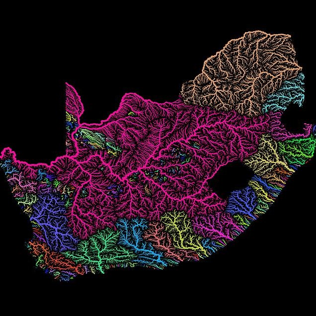Our Data
Satellite Images, Polygons and points of Neighbourhoods and Household Income Data per neighbourhood
+Our study makes use of 5 datasets: satellite images, polygons of neighbourhoods, household income data, a shapefile dataset of all the buildings in the country and a cadastral dataset.
Polygons of Neighbourhoods
We have a dataset of polygons subdividing neighbourhoods in the country. They are divided into two categories: Enumerator Areas (EA) and Main place.
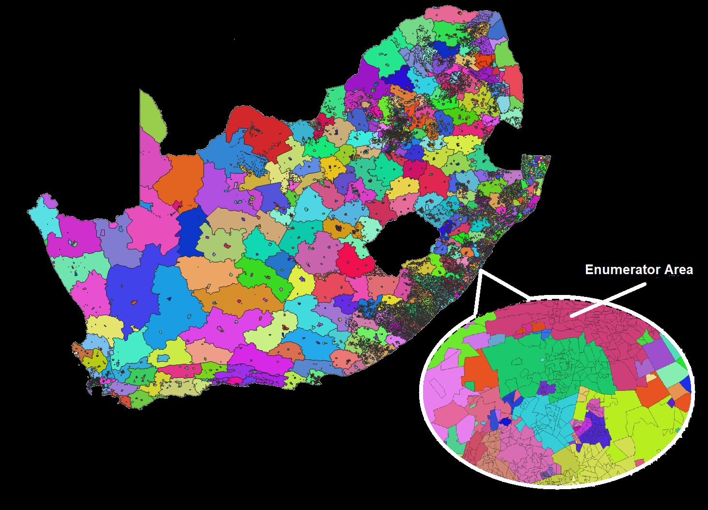
A Main place is an enumeration of several EAs and each EA typically consists of between 100 and 250 households. There is a total of 80 787 EAs and a total of 14 039 Main places in the country. These are permanant dermacations made by the government post Apartheid.
Source: CENSUS 2011 SPATIAL METADATA, STATS SA
Format: Shapefile
Coverage: The entire country
Year: 2011
Source: Statistics South Africa (STATS SA)
Size of dataset: Enumeration Areas- 140 MB
Size of dataset: Main Places- 103 MB
Attributes Main Places- 103 MBTable 1: Number of Main Places per Province
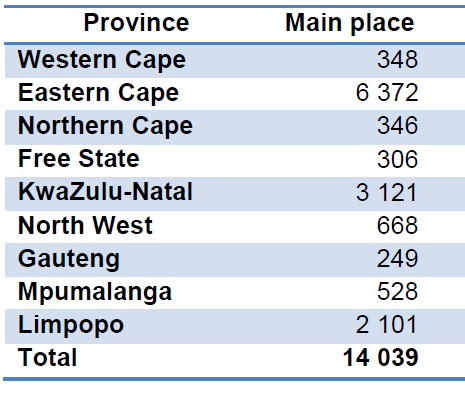Table 2: EA Types
Table 3: Number of EAs per EA type per Province
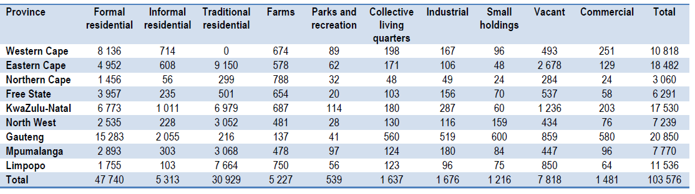
Satellite Images
The satellite image dataset consists of low resolution and high resolution versions of satellite images. These are SPOT 5,6,7 images of the entire country for each year from 2006 - 2017
SPOT 5 satellite image: 2011 South Africa
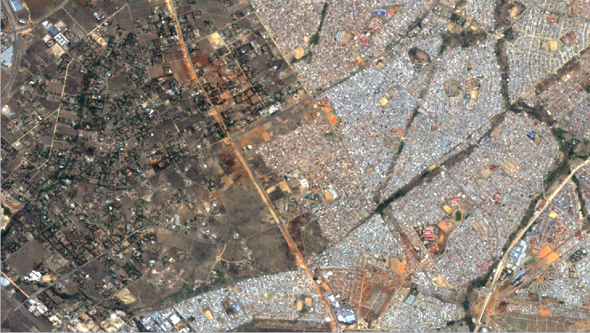
Source: South African National Space Agency (SANSA)
The Dataset
These are all GeoTiff raw images. All imagery was processed to level 1 A which entails no geometric corrections or resampling and some systematic sensor related radiometric artefact removal. Imagery was acquired between June 06 and August 05.
Format: Geotiff
Coverage: The entire country
Year: 2011
Source: SANSA
Number of images: 550
Size per image: 21 688 x 21 688 pixels at 1.31GB
Size of dataset 720GB
Building SPOT Count shapefiles
The shapefile dataset was obtained from the Council for Scientific and Industrial Research (CSIR) (funded by Eskom), and consists of building count data in South Africa from 2006 to 2016 as shown in Figures 6 and 7. The dataset captures geographical coordinates of formal, informal and non-dwelling structures. In locations where individual dwellings could not be distinguished (usually in informal settlements), the geographical coordinates of countable dwellings are replaced by density polygons as depicted in Figure 3. All the data points have features such as class names (e.g. dwelling, school, airport etc), province and municipality, describing the building type and location.
Red Dots represent the building SPOT count dataset(dense= township vs sparse= suburb) Overlayed on the satellite images

Household Income data
The Household Income dataset consists of 22 108 data points covering the entire country’s aggregated household income data per Subplace(which is a subset of a Mainplace but each consists of several Enumeration Areas(EAs)). This dataset depicts the number of households per income bracket per sublace. These range from No income to ZAR 2 457 601 or more.
Household Income range Data per Subplace per place

Cadastral dataset
The Cadastral dataset maps the exact sizes of real estate ownership and spatial information needed to describe that geographic extent.
2019 Cadastral dataset over Township(right) next to Rich neighbourhood(right)
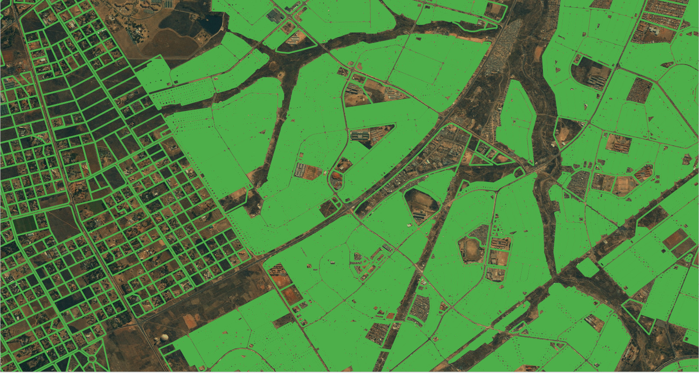 -
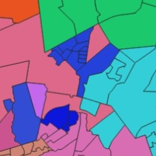
EAs and Main Places
_Polygons of Neighbourhoods Dataset
+Source: CENSUS 2011 SPATIAL METADATA, STATS SA
Format: Shapefile
Coverage: The entire country
Year: 2011
Source: Statistics South Africa (STATS SA)
Size of dataset: Enumeration Areas- 140 MB
Size of dataset: Main Places- 103 MB
Attributes Main Places- 103 MBNumber of EAs per EA type per Province
Our data sample- by province

Our data sample- by neighbourhood
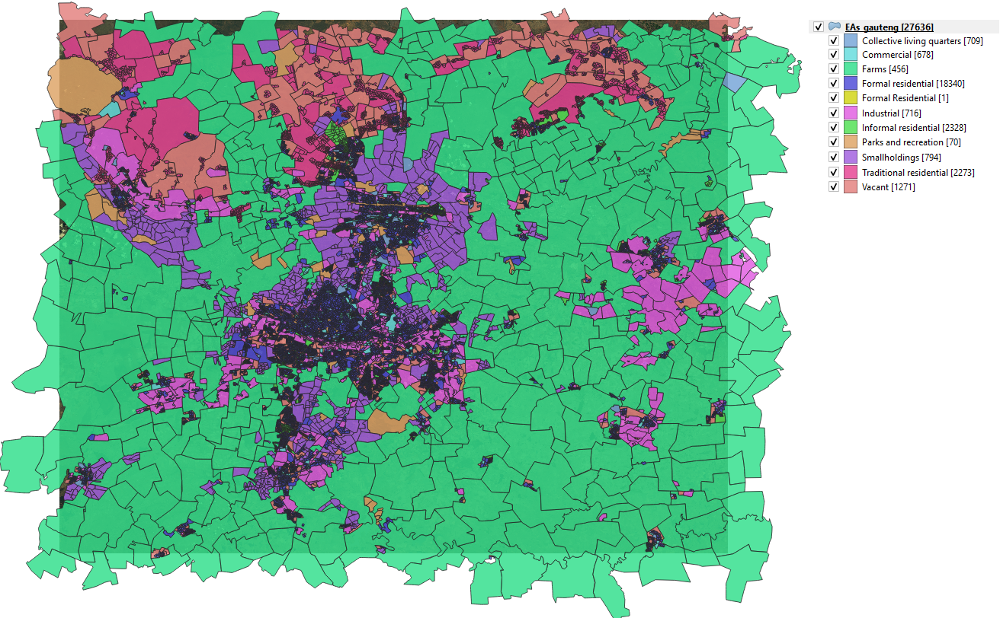
Our data sample- by neighbourhood with townships
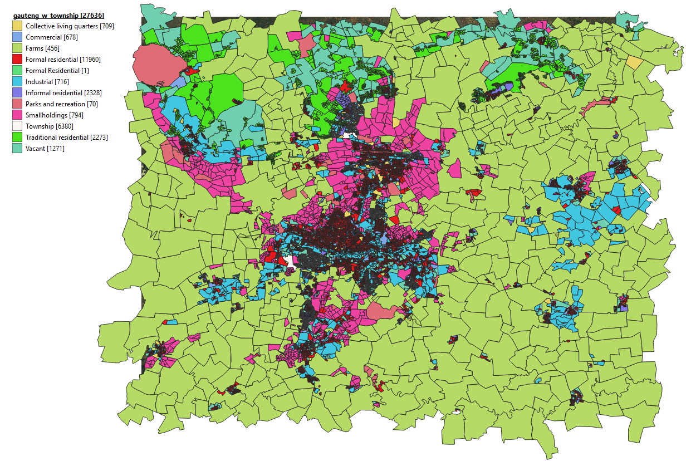 -

Satellite Images
_2011 SPOT 5 Satellite Image Dataset
+Source: South African National Space Agency (SANSA)
Format: Geotiff
Coverage: The entire country
Year: 2011
Source: SANSA
Number of images: 550
Size per image: 21 688 x 21 688 pixels at 1.31GB
Size of dataset 720GBOur data example
Step 1: Reduce the image size
For better data handling, we subdivided the huge satellite images from each 21 688 x 21 688 pixels to 64 2711 x 2711 pixels images.
Gauteng data: From 20 images covering the entire province, we derived 1280 smaller images of 2711 x 2711 pixels.Subdividing the images using an 8 x 8 grid
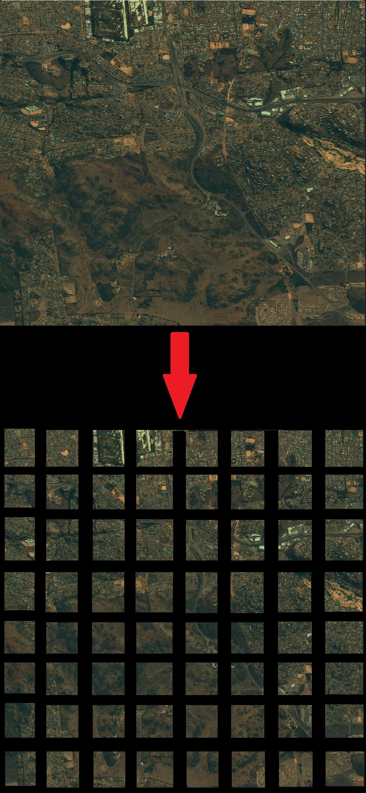
We reduced the images further to 256x 256
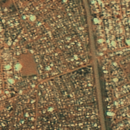
-
Gallery
Looking at the data at hand
_Satellite Images, Polygons and points of Neighbourhoods and the Building SPOT count data overlayed
+Our study makes use of 4 datasets: satellite images, polygons of neighbourhoods, household income data and a shapefile dataset of all the buildings in the country.
President park(suburb:left) vs Tembisa(township:right)on satellite imagery
President park(suburb:left) vs Tembisa(township:right) on satellite imagery overlayed with with the building data to show density

Sandton(suburb:left) vs Industria(industrial area:middle) vs Alex(township:right) on satellite imagery
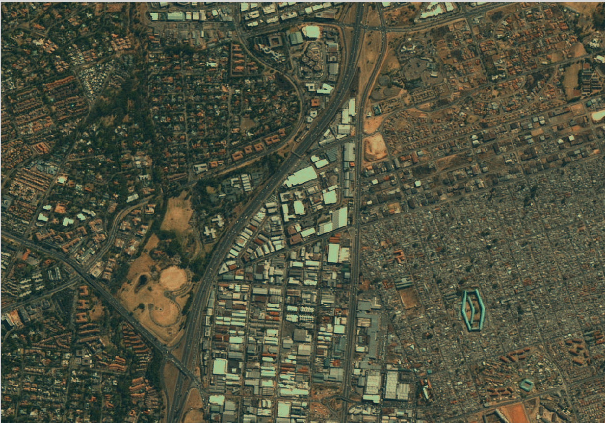
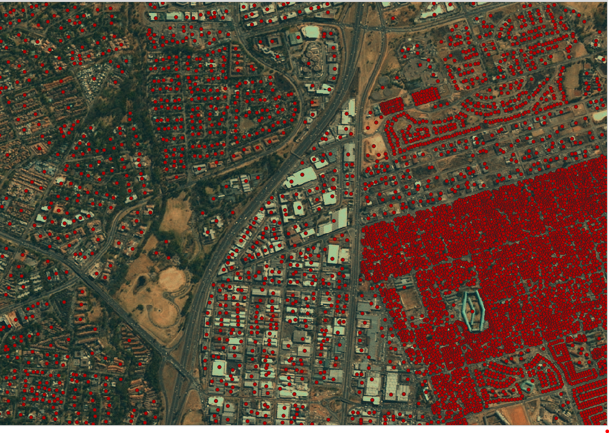
Alex township with Enumeration Area polygons overlayed on satellite imagery

Alex township with Enumeration Area polygons overlayed on satellite imagery overlayed with with the building data to show density

-
Model training
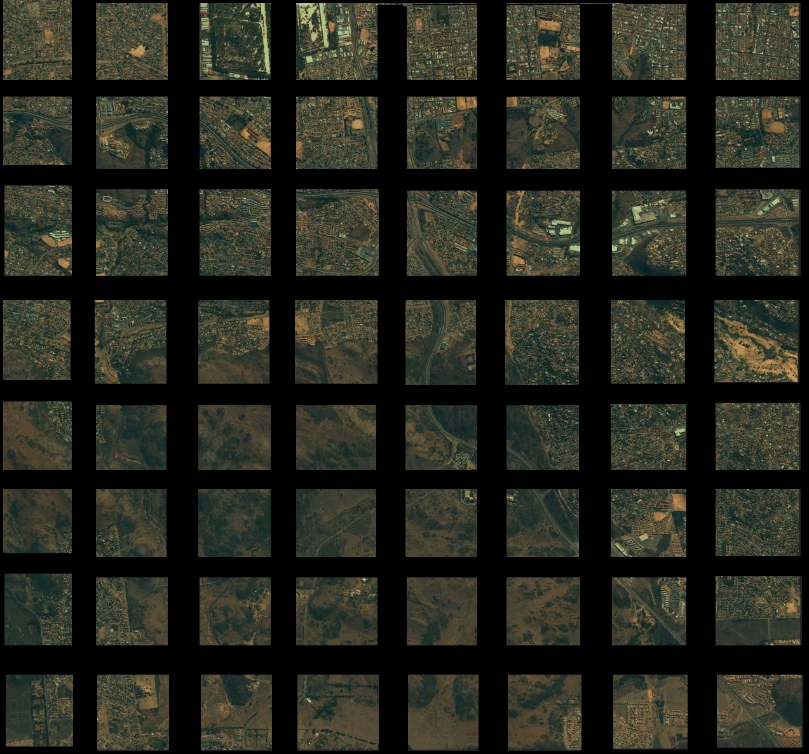Data preprocessing
_
+Step 1: Reduce the image size
Step 2: Label the EA polygon data into 12 classes of neighbourhoods
We labelled all the EAs of Gauteng Province into 12 classes.
Township, Suburb, Commercial, Farms, Informal_settlement, Industrial,Parks_and_recreation, Smallholdings, Traditional_residential, Collective_living_quarters, Vacant, Other
Step 3: Label the neighbourhoods
Overlay the polygons on the satellite images then create labels
Labelled Neighbourhood (Not all classes)

-

Models Built
_55% Acuracy; Problem- class imbalance
+The model: Semantic segmentation over 12 classes
Unet: Slightly modified original Unet architecture
Data was sampled from 1 province(Gauteng). Farms cause a huge class imbalance; they span over huge amounts of land.
What to try next: Improve labels; Over and under sampling; Merge classes (vacant/open land and farms, etc.); Build a low res regional map of the larger area as a feature
Accuracy : 55%
Cohen's Kappa : 0.325
Ref: Cohen's kappa
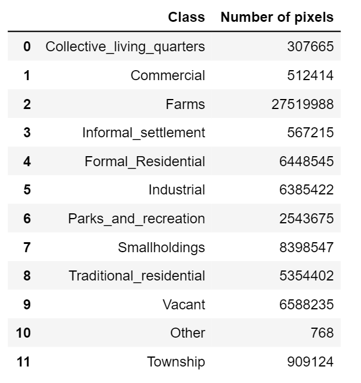Number of pixels per class
Observation: Unbalaced dataset; undersampled pixels in other classes, model learns pixels of farms really well hence the high accuracy.
Confusion matrix

Observation: The model confuses the labels from the classes Farm and Vacant land a lot. Looking at the images below from the test set- We can sort of see why it is easy to confuse them given the fact that they often look similar(especially on land that has not been farmed in a while). We will perhaps consider merging these two classes in the next iteration.
Test data
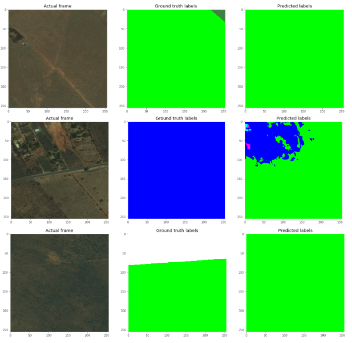 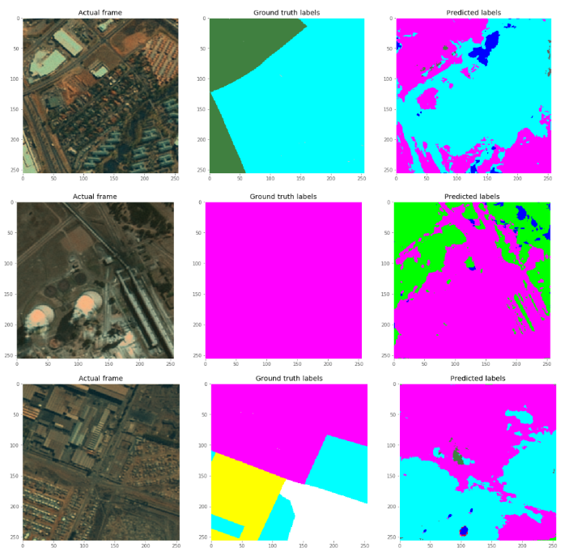
-
Models Built
_x% Acuracy; Problem- ____
+The model: Semantic segmentation over 11 classes.We have merged the Farm class with Vacnt land class
Unet: Slightly modified original Unet architecture
Data was sampled from Gauteng province only. We spatially joined the cadastral dataset with the EA dataset to crop just the houses in the neighbourhoods. So they look like the image below
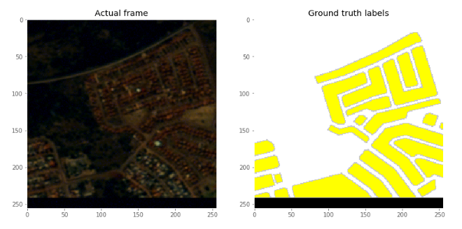What to try next: Improve labels; Over and under sampling; Merge classes (vacant/open land and farms, etc.); Build a low res regional map of the larger area as a feature
Accuracy : x%
Cohen's Kappa : x
Number of pixels per class
Confusion matrix
Test data
-
Pppp